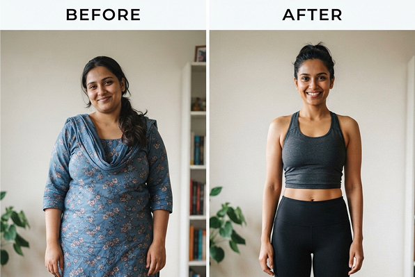

सफलता की कहानियाँ:
विक्रम, 52 साल के
"मैं अपने पूरे जीवन में अतिरिक्त वजन से जूझता रहा हूं, लेकिन 50 वर्षों के बाद मेरा पेट एकदम बड़ा हो गया है।". इस फॉर्मूले ने अद्भुत काम किया. 8 हफ़्तों में मेरा वज़न 18 किलो कम हो गया और मेरी 'बीयर बेली' गायब हो गई. अब मैं खुद को 20 साल छोटा महसूस करता हूँ!”

अर्जुन, 45 साल के
“कार्यालय में काम करने और आवाजाही की कमी का असर पड़ा. मुझे विश्वास नहीं था कि जिम जाए बिना मैं अपना वजन कम कर सकता हूं. लेकिन केवल 2 महीनों में मैंने अपना पहनावा पूरी तरह से बदल दिया. माइनस 15 किलो और सांस की कोई तकलीफ़ नहीं!''

अंजलि, 24 साल की
“मैं हमेशा अपने शरीर को लेकर संजीदा रहती थी, खासकर साड़ी को लेकर।. एक दो स्लिम ने मुझे आत्मविश्वास हासिल करने में मदद की. डेढ़ महीने में मेरा वजन 12 किलो कम हो गया. अब मैं ढीले-ढाले कपड़ों के पीछे नहीं छिपता!”

प्रिया, 38 साल की
“दूसरे जन्म के बाद, वजन बढ़ गया. मैंने सभी आहार आज़माए, लेकिन केवल इस रात्रि फ़ॉर्मूले से ही मदद मिली. 6 सप्ताह में पेट और जांघों से 10 किलो चर्बी कम हो गई. मेरे पति खुश हैं!”

संजय, 49 साल के
“आंत की चर्बी के कारण डॉक्टरों ने मुझे मधुमेह होने से डराया. मैंने सोने से पहले यह उपाय करना शुरू कर दिया, और परिणामों ने मेरे डॉक्टर को भी आश्चर्यचकित कर दिया. बिना कष्टदायक आहार के 3 महीने में शून्य से 20 किलो कम".